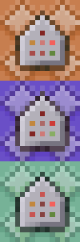

How to use commands?
If you wan to use commands it is usefull to know how and where to use them.
So thats why your'e here!
Command blocks.

Command blocks are a good way to use commands, they are simple to use and easy to set up. The only thing that isn't good about them is that they have to be loaded to work. So you either have to place them in the spawn chunks, or make sure the chunks they are in are always loaded.There are three types of command blocks.
The orange one is an impulse command block, it executes the command once when it gets a redstone signal.
The purple one is an repeat command block, it executes the command every tick as long as it has a redstone signal.
The cyan one is an chain command block, you place this one after an impulse command block or an repeat command block and then it executes the command every time the one infornt of it executes his command.
Data packs.
If you are planning to make somethin big out of commands then it is usefull to do it in an datapack.
When you have set up a datapack you can make functions, inside these functions you put your commands and
when the function gets triggered it executes the commands in order.
A datapack is also stored in the world folder so you dont have to think about keeping command block loaded.
Here is a video on how to set up a datapack.